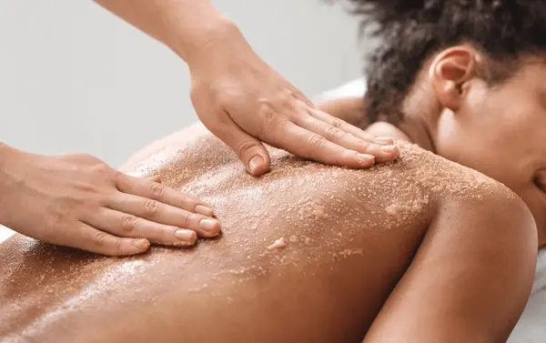

Quick benefits of regular massage
- Reduces stress and muscle tension
- May improve sleep quality
- Supports post‑exercise recovery
- Enhances body awareness and posture
Wellness trends often highlight “cellular health” and “longevity,” but for most people, these concepts are best supported by basic healthy habits: good sleep, stress management, regular movement, and proper nutrition. Massage therapy fits into this picture as a tool for relaxation, tension relief, and overall well‑being – not as a medical treatment for aging or disease.
In Bellevue, many professionals and active adults use massage to counter the effects of long workdays, desk posture, and daily stress. While some early research has explored how massage might influence markers like oxidative stress or inflammation, the evidence is not strong enough to make health claims. Instead, we focus on what massage is proven to do: reduce muscle tension, lower perceived stress, improve recovery from physical activity, and support relaxation.

What the Science Actually Says
Some small studies have suggested that massage may reduce certain stress hormones and inflammatory markers in the short term. However, these findings are preliminary and do not mean massage directly affects “cellular energy” or “mitochondrial health.” The National Center for Complementary and Integrative Health (NCCIH) states that massage appears to have few risks when performed by a trained practitioner, but evidence for many specific health claims is still limited.
If you are interested in the science behind massage and wellbeing, you can read more at NCCIH’s massage therapy overview. What is clear is that massage can help you feel less tense, sleep better, and recover from physical strain – all of which contribute to feeling healthier overall.
Practical Ways Massage Supports Wellness
- Stress reduction: Swedish massage and gentle bodywork can lower perceived stress and promote relaxation.
- Muscle recovery: Deep tissue or sports massage may reduce soreness after exercise, helping you stay active.
- Improved circulation: Massage increases blood flow to soft tissues, which may aid recovery from minor muscle strain.
- Better sleep: Many clients report deeper sleep after a massage session, which is essential for overall health.
- Body awareness: Regular massage can help you notice areas of chronic tension earlier, prompting better ergonomics and self‑care.
Integrating Massage into a Healthy Lifestyle
For residents of Bellevue, Seattle, Redmond, Kirkland, and King County, massage can be a valuable complement to other wellness practices:
- Combine massage with regular exercise (e.g., walking, yoga, strength training).
- Use massage to manage the physical effects of desk work, commutes, and family responsibilities.
- Consider massage as part of a stress management plan alongside adequate sleep and social connection.
- For active individuals, schedule massage after intense workouts or long hiking weekends to assist recovery.
Massage is not a replacement for medical care. If you have persistent fatigue, unexplained pain, or concerns about aging, speak with a healthcare provider.
What to Expect in a Wellness‑Focused Massage
Whether you choose Swedish, deep tissue, or a custom blend, a wellness massage typically involves:
- An initial intake to discuss your goals (relaxation, tension relief, recovery).
- Pressure and techniques adjusted to your comfort level.
- Focus on areas of chronic tension (neck, shoulders, back, hips).
- A calm environment to help your nervous system settle.
Mobile massage is also available for those who prefer to receive care at home – especially convenient for busy professionals and parents.
Finding a Responsible Massage Therapist in Bellevue
Choose a licensed massage therapist (LMT) who listens to your needs, avoids overpromising health benefits, and prioritizes safety. At Lazizi® Wellness, we are WA‑licensed (LMT #MA6098723) and focus on science‑informed, client‑centered care. We do not claim to cure, treat, or prevent disease.
Explore our Swedish, deep tissue, and therapeutic massage services for Bellevue and Seattle clients. For at‑home convenience, review our mobile massage options for King County.
📚 If you also deal with desk‑related tension, read our guide on mobile massage for remote tech leads. For active recovery, check out sports massage for pickleball elbow or post‑hike massage for Mount Si recovery.
Ready to make massage part of your wellness routine?
Book a session in Bellevue, Seattle, or via mobile outcall. Let’s help you feel your best.
Book Your Session →Frequently Asked Questions – Massage & Wellness
Can massage therapy improve energy levels?
Many people feel more relaxed and less mentally fatigued after massage, which may boost perceived energy. Massage is not a treatment for medical fatigue – consult a doctor if tiredness persists.
Does massage help with healthy aging?
Regular massage can support relaxation, reduce muscle tension, and improve circulation – all helpful for comfort and mobility. It is not a proven anti‑aging treatment, but many find it beneficial as part of a healthy lifestyle.
What type of massage is best for stress and wellness?
Swedish massage is ideal for relaxation and stress reduction. Deep tissue helps with chronic muscle tension. A licensed therapist can recommend the best approach for your needs.
Do you offer mobile wellness massage in Bellevue?
Yes. Lazizi Wellness offers mobile massage in Bellevue, Seattle, Redmond, Kirkland, and King County – we bring the table to your home or office.
This information is for educational purposes and does not constitute medical advice. Massage should not be used to delay medical care. Always consult a qualified healthcare provider for health concerns, especially fatigue, pain, or aging‑related issues.